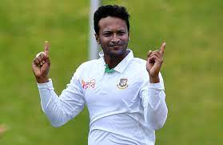
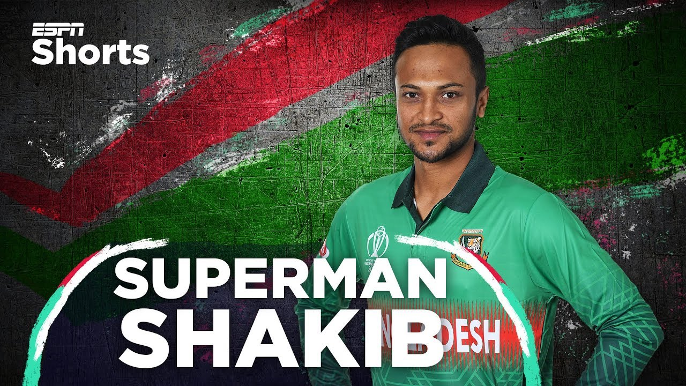

সাকিব আল হাসান; born 24 March 1987) is a Bangladeshi cricketer who plays for the Bangladesh national cricket team[3] He is currently the captain in Test cricket[4] and ranked no 1 all-rounder in ICC ODI Players rankings.[5][6] His aggressive left-handed batting style in the middle order and controlled slow left-arm orthodox bowling has made him arguably Bangladesh's greatest cricketer.[7][8][9]He was ranked 90th most famous athlete in the world by ESPN.[10]

Shakib Al Hasan made his test debut in 2007 against India. His breakthrough came in the Test against New Zealand in Chittagong in 2008. In the 2012 Asia Cup, Shakib scored 237 runs, including three fifties, and took six wickets. Bangladesh progressed to the tournament's final for the first time, where they lost to Pakistan by two runs. Shakib Al Hasan received many awards for his performance in the game. He was the most valuable player of the 2019 World Cup in the 2019 Cricket World Cup for his excellent performance with both bat and ball.[citation needed] He ended up as 3rd most run-scorer in the tournament with 606 runs in total.[11] He has received 31 man-of-the-match awards and 16 man-of-the-series awards in all formats.[12] Currently,

he holds the 3rd most Player of the tournament awards in all forms after Sachin Tendulkar and Virat Kohli.[13]Between 2009 and 2022, he captained the Bangladesh cricket team in 85 matches across all three formats.